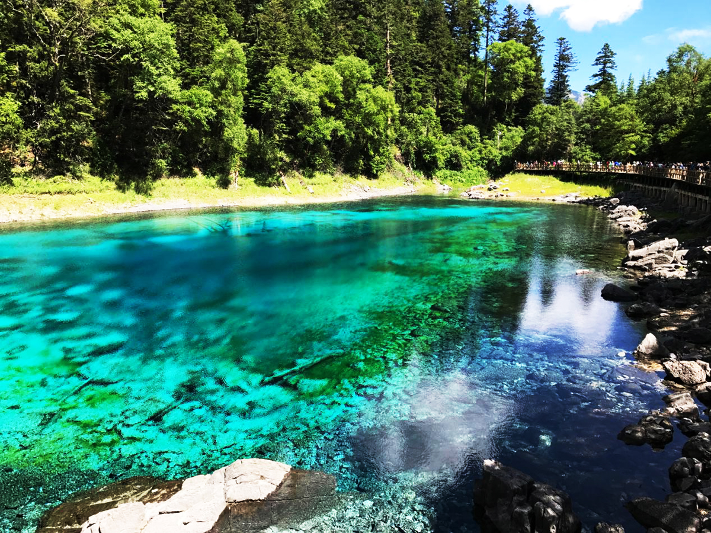
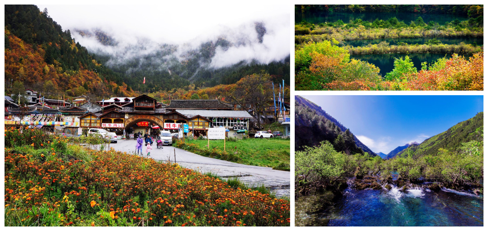

九
寨
沟
九寨沟位于四川省西北部岷山山脉南段的阿坝藏族羌族自治州九寨沟县漳扎镇境内，地处岷山南段弓杆岭的东北侧。距离成都市400多千米，系长江水系嘉陵江上游白水江源头的一条大支沟。
九寨沟自然保护区地势南高北低，山谷深切，高差悬殊。北缘九寨沟口海拔仅2000米，中部峰岭均在4000米以上，南缘达4500米以上，主沟长30多公里。
秋季中以每年10月15日至30日为九寨沟最佳旅游时间。此时大部分树叶都已经完全变色，有的是金灿灿的黄，有的是漫山遍野的红，再加上其它的颜色作为过渡和点缀，九寨沟俨然成了一个上帝的调色盘。
九寨沟的得名来自于景区内九个藏族寨子（树正寨、则查洼寨、黑角寨、荷叶寨、盘亚寨、亚拉寨、尖盘寨、热西寨、郭都寨），这九个寨子又称为“和药九寨”。由于有九个寨子的藏民世代居住于此，故名为“九寨沟”。
九寨沟一日游有感
2022.04.21 来源：一日游驴友群-老牛
九寨沟是一个风景秀丽的景区，它给你的第一感觉——美。
初入沟内，车中的人不由得发出阵阵惊叹，太美了!远处层层叠叠都是山，有些山戴着顶白帽子，在高原明净的阳光的照射下，如凝脂一般。蜿蜒于山间的是不尽的绿色，却不象一般原始森林那样浓绿如墨，而是微微地带着些柔和，映着高原那几乎与地面相接的湛蓝的天空，显得无比纯净可爱。
湖泊和湖泊之间，由于落差，形成了大大小小的瀑布，令人百看不厌。我们顺着这些小瀑布前行，觉得水气越来越浓，水声越来越大。渐渐地，一道白色的水幕出现在眼前，它就是九寨沟最大的诺日朗瀑布。初见便惊叹于它气势的恢弘，远远看去，只觉一条巨大的白色幕布从山崖间直挂而下，随风不停地抖动。近看又如无数的珍珠，先集合在一起吞噬着撞击着岩石，岩石不甘心自己的命运，它奋力地与水抗争，以自己的身躯将水无情地打碎，于是发出震耳欲聋的巨响，无数珍珠被一只强有力的手从四面八方纷纷撒下，溅开瀑布下那安静的碧绿中带一点湛蓝的深潭，又把水花溅到每个人的面前。人们在伟大的自然面前，除了惊讶，除了赞叹，还能做什么呢?


第一次用途牛，太让我们惊喜了！真的很不错，行程安排的也很好！幸运的是，往返飞机都没有延误！九寨沟的美，让我们的蜜月越发美满！
来自：一日游驴友 www.yiriyou.com